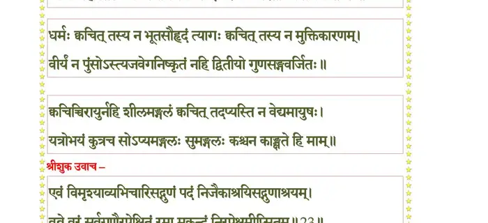
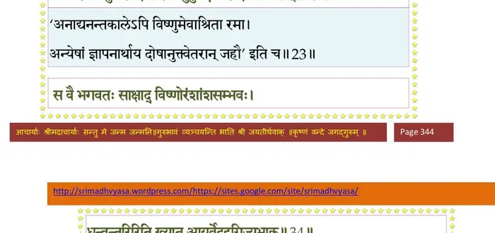

स्कन्ध 8 · अध्याय 8
श्लोक १
श्रीशुक उवाच–
पीते गरे वृषाङ्केण प्रीतास्तेऽमरदानवाः ।
ममन्थुस्तरसा सिन्धुं हविर्धानी ततोऽभवत्।। १ ।।
पीते गरे वृषाङ्केण प्रीतास्तेऽमरदानवाः ।
ममन्थुस्तरसा सिन्धुं हविर्धानी ततोऽभवत्।। १ ।।
श्लोक २
तामग्निहोत्रीमृषयो जगृहुर्ब्रह्मवादिनः ।
यज्ञस्य देवपानस्य मेध्याय हविषे नृप।। २ ।।
यज्ञस्य देवपानस्य मेध्याय हविषे नृप।। २ ।।
श्लोक ३
तत उच्चैःश्रवा नाम हयोऽभूच्चन्द्रपाण्डुरः ।
तस्मिन् बलिः स्पृहां चक्रे नेन्द्र ईश्वरशिक्षया।। ३ ।।
तस्मिन् बलिः स्पृहां चक्रे नेन्द्र ईश्वरशिक्षया।। ३ ।।
श्लोक ४
तत ऐरावतो नाम वारणेन्द्रो विनिर्गतः ।
दन्तैश्चतुर्भिः श्वेताद्रेर्हरन्भगवतो महम्।। ४ ।।
दन्तैश्चतुर्भिः श्वेताद्रेर्हरन्भगवतो महम्।। ४ ।।
श्लोक ५
ततोऽभवत् पारिजातः सुरलोकविभूषणः ।
पूरयत्यर्थिनो योऽर्थैः शश्वद् भुवि यथा भवान्।। ५ ।।
पूरयत्यर्थिनो योऽर्थैः शश्वद् भुवि यथा भवान्।। ५ ।।
श्लोक ६
ततश्चाप्सरसो जाता निष्ककण्ठ््यः सुवाससः ।
रमण्यः स्वर्गिणां वल्गुगतिलीलावलोकनैः।। ६ ।।
रमण्यः स्वर्गिणां वल्गुगतिलीलावलोकनैः।। ६ ।।
श्लोक ७
ततश्चाऽऽविरभूत् साक्षाच्छ्रीरमा भगवत्प्रिया ।
रञ्जयन्ती दिशः कान्त्या विद्युत्सौदामनी यथा।। ७ ।।
रञ्जयन्ती दिशः कान्त्या विद्युत्सौदामनी यथा।। ७ ।।
श्लोक ८
तस्यां चक्रुः स्पृहां सर्वे ससुरासुरमानवाः ।
रूपौदार्यवयोवर्णमहिमाक्षिप्तचेतसः।। ८ ।।
रूपौदार्यवयोवर्णमहिमाक्षिप्तचेतसः।। ८ ।।
श्लोक ९
तस्याश्चासनमानिन्ये महेन्द्रो महदद्भुतम् ।
मूर्तिमत्यः सरिच्छे्रेष्ठा हेमकुम्भैर्जलं शुचि।। ९ ।।
मूर्तिमत्यः सरिच्छे्रेष्ठा हेमकुम्भैर्जलं शुचि।। ९ ।।
श्लोक १०
अभिषेचनिका भूमिराहरत् सकलौषधीः ।
गावः पञ्चपवित्राणि वसन्तो मधु माधवम्।। १० ।।
गावः पञ्चपवित्राणि वसन्तो मधु माधवम्।। १० ।।
श्लोक ११
ऋषयः कल्पयाञ्चक्रुरभिषेकं यथाविधि ।
जगुर्भद्राणि गन्धर्वा नार्यश्च ननृतुर्जगुः।। ११ ।।
जगुर्भद्राणि गन्धर्वा नार्यश्च ननृतुर्जगुः।। ११ ।।
श्लोक १२
मेघा मृदङ्गपणवमुरजानकगोमुखान् ।
व्यनादयन् शङ्खवेणुवीणातुमुलनिःस्वनान्।। १२ ।।
व्यनादयन् शङ्खवेणुवीणातुमुलनिःस्वनान्।। १२ ।।
श्लोक १३
ततोऽभिषिषिचुर्देवीं श्रियं पद्मकरां सतीम् ।
दिगिभाः पूर्णकलशैः सूक्तवाकैर्द्विजेरितैः ।। १३ ।।
दिगिभाः पूर्णकलशैः सूक्तवाकैर्द्विजेरितैः ।। १३ ।।
श्लोक १४
समुद्रः पीतकौशेयवाससी समुपाहरत् ।
वरुणः स्रजं वैजयन्तीं मधुना मत्तषट्पदाम्।। १४ ।।
वरुणः स्रजं वैजयन्तीं मधुना मत्तषट्पदाम्।। १४ ।।
श्लोक १५
भूषणानि विचित्राणि विश्वकर्मा प्रजापतिः ।
हारं सरस्वती पद्ममजो नागाश्च कुण्डले।। १५ ।।
हारं सरस्वती पद्ममजो नागाश्च कुण्डले।। १५ ।।
श्लोक १६
ततः कृतस्वस्त्ययनोत्पलस्रजं नदद्द्विरेफां परिगृह्य पाणिना ।
चचाल वक्त्रं सुकपोलकुण्डलं सव्रीडहासं दधती सुशोभनम् ।। १६ ।।
चचाल वक्त्रं सुकपोलकुण्डलं सव्रीडहासं दधती सुशोभनम् ।। १६ ।।
श्लोक १७
स्तनद्वयं चातिकृशोदरी समं निरन्तरं चन्दनकुङ्कुमोक्षितम् ।
ततस्ततो नूपुरवल्गुसिञ्जितैर्विसर्पती हेमलतेव सा बभौ।। १७ ।।
ततस्ततो नूपुरवल्गुसिञ्जितैर्विसर्पती हेमलतेव सा बभौ।। १७ ।।
श्लोक १८
विलोकयन्ती निरवद्यमात्मनः पदं ध्रुवं चाव्यभिचारिसद्गुणम् ।
गन्धर्वयक्षासुरसिद्धचारणत्रैविष्टपेयादिषु नान्वविन्दत्।। १८ ।।
गन्धर्वयक्षासुरसिद्धचारणत्रैविष्टपेयादिषु नान्वविन्दत्।। १८ ।।
श्लोक १९
नूनं तपो यस्य न मन्युनिर्जयो ज्ञानं क्वचित् तच्च न सङ्गवर्जितम् ।
कश्चिन्महांस्तस्य न कामनिर्जयः स ईश्वरः किं परतो व्यपाश्रयः।। १९ ।।
कश्चिन्महांस्तस्य न कामनिर्जयः स ईश्वरः किं परतो व्यपाश्रयः।। १९ ।।
भागवततात्पर्यनिर्णय

श्लोक २०
धर्मः क्वचित् तस्य न भूतसौहृदं त्यागः क्वचित् तच्च न मुक्तिकारणम् ।
वीर्यं न पुंसोऽस्त्यजवेगनिष्कृतं न हि द्वितीयो गुणसङ्गवर्जितः ।। २० ।।
वीर्यं न पुंसोऽस्त्यजवेगनिष्कृतं न हि द्वितीयो गुणसङ्गवर्जितः ।। २० ।।
श्लोक २१
क्वचिच्चिरायुर्न हि शीलमङ्गलं क्वचित् तदप्यस्ति न वेद्यमायुषः ।
यत्रोभयं कुत्र च सोऽप्यमङ्गलः सुमङ्गलः कश्चन कांक्षते हि माम्।। २१ ।।
यत्रोभयं कुत्र च सोऽप्यमङ्गलः सुमङ्गलः कश्चन कांक्षते हि माम्।। २१ ।।
श्लोक २२
श्रीशुक उवाच–
एवं विमृश्याव्यभिचारिसद्गुणं पदं निजैकाश्रयिसद्गुणाश्रयम् ।
वव्रे वरं सर्वगुणैरपेक्षितं रमा मुकुन्दं निरपेक्षमीप्सितम्।। २२ ।।
एवं विमृश्याव्यभिचारिसद्गुणं पदं निजैकाश्रयिसद्गुणाश्रयम् ।
वव्रे वरं सर्वगुणैरपेक्षितं रमा मुकुन्दं निरपेक्षमीप्सितम्।। २२ ।।
भागवततात्पर्यनिर्णय

श्लोक २३
तस्यांसदेश उशतीं नवकञ्जमालां माद्यन्मधुव्रतवरूथगिरोपघुष्टाम् ।
तस्थौ निवीय निकटे तदुरः स्वधाम सव्रीडहासविकसन्नयनेन भीता ।। २३ ।।
तस्थौ निवीय निकटे तदुरः स्वधाम सव्रीडहासविकसन्नयनेन भीता ।। २३ ।।
श्लोक २४
स्वस्याः स्त्रियस्त्रिजगतो जनको जनन्या
वक्षो निवासमकरोत् परमं विभूतेः ।
श्रीः स्वाः प्रजाः सकरुणेन निरीक्षणेन
यत्र स्थितैधयत साधिपतींस्त्रिलोकान्।। २४ ।।
वक्षो निवासमकरोत् परमं विभूतेः ।
श्रीः स्वाः प्रजाः सकरुणेन निरीक्षणेन
यत्र स्थितैधयत साधिपतींस्त्रिलोकान्।। २४ ।।
श्लोक २५
शङ्खतूर्यमृदङ्गानां वादित्राणां पृथक् स्वनः ।
देवानुगानां सस्त्रीणां नृत्यतां गायतामभूत्।। २५ ।।
देवानुगानां सस्त्रीणां नृत्यतां गायतामभूत्।। २५ ।।
श्लोक २६
ब्रह्मरुद्राङ्गिरोमुख्याः सर्वे विश्वसृजो विभुम् ।
ईडिरेऽवितथैर्मन्त्रैस्तल्लिङ्गैः पुष्पवर्षिणः।। २६ ।।
ईडिरेऽवितथैर्मन्त्रैस्तल्लिङ्गैः पुष्पवर्षिणः।। २६ ।।
श्लोक २७
श्रिया विलोकिता देवाः सप्रजापतयः प्रजाः ।
शीलादिगुणसंपन्ना लेभिरे निर्वृतिं पराम्।। २७ ।।
शीलादिगुणसंपन्ना लेभिरे निर्वृतिं पराम्।। २७ ।।
श्लोक २८
निस्सत्वा लोलुपा राजन् निरुद्योगा गतत्रपाः ।
यदा चोपेक्षिता लक्ष्म्या बभूवुर्दैत्यदानवाः।। २८ ।।
यदा चोपेक्षिता लक्ष्म्या बभूवुर्दैत्यदानवाः।। २८ ।।
श्लोक २९
अथासीद् वारुणी देवी कन्या कमललोचना ।
असुरा जगृहुस्तां वै हरेरनुमतेन ते।। २९ ।।
असुरा जगृहुस्तां वै हरेरनुमतेन ते।। २९ ।।
श्लोक ३०
अथोदधेर्मथ्यमानात् काश्यपैरमृतार्थिभिः ।
उदतिष्ठन् महाराज पुरुषः परमाद्भुतः।। ३० ।।
उदतिष्ठन् महाराज पुरुषः परमाद्भुतः।। ३० ।।
श्लोक ३१
दीर्घपीवरदोर्दण्डः कम्बुग्रीवोऽरुणेक्षणः ।
श्यामलस्तरुणः स्रग्वी सर्वाभरणभूषितः ।। ३१ ।।
श्यामलस्तरुणः स्रग्वी सर्वाभरणभूषितः ।। ३१ ।।
श्लोक ३२
पीतवासा महोरस्कः सुमृष्टमणिकुण्डलः ।
नीलकुञ्चितकेशान्तः सुभगः सिंहविक्रमः ।। ३२ ।।
नीलकुञ्चितकेशान्तः सुभगः सिंहविक्रमः ।। ३२ ।।
श्लोक ३३
अमृतापूर्णकलशं बिभ्रद् वलयभूषितः ।
स वै भगवतः साक्षाद् विष्णोरंशांशसम्भवः ।। ३३ ।।
स वै भगवतः साक्षाद् विष्णोरंशांशसम्भवः ।। ३३ ।।
श्लोक ३४
धन्वन्तरिरिति ख्यात आयुर्वेददृगिज्यभाक् ।
तमालोक्यासुराः सर्वे कलशं चामृताभृतम्।। ३४ ।।
तमालोक्यासुराः सर्वे कलशं चामृताभृतम्।। ३४ ।।
भागवततात्पर्यनिर्णय
श्लोक ३४
लिप्सन्तः सर्ववस्तूनि कलशं तरसाऽहरन् ।
नीयमानेऽसुरैस्तस्मिन् कलशेऽमृतभाजने ।। ३४ ।।
नीयमानेऽसुरैस्तस्मिन् कलशेऽमृतभाजने ।। ३४ ।।
श्लोक ३५
विषण्णमनसो देवा हरिं शरणमाययुः।। ३५ ।।
श्लोक ३६
इति तद्दैन्यमालोक्य भगवान् भृत्यकामकृत् ।
मा खिद्यत मिथोऽर्थं वः साधयिष्ये स्वमायया।। ३६ ।।
मा खिद्यत मिथोऽर्थं वः साधयिष्ये स्वमायया।। ३६ ।।
श्लोक ३७
मिथः कलिरभूत् तेषां तदर्थे तर्षचेतसाम् ।
अहं पूर्वमहं पूर्वं न त्वं न त्वमिति प्रभो।। ३७ ।।
अहं पूर्वमहं पूर्वं न त्वं न त्वमिति प्रभो।। ३७ ।।
श्लोक ३८
देवाः स्वभागमर्हन्ति ये तुल्यायासहेतवः ।
सत्रयाग इवैतस्मिन्नेष धर्मः सनातनः।। ३८ ।।
सत्रयाग इवैतस्मिन्नेष धर्मः सनातनः।। ३८ ।।
श्लोक ३९
इति स्वान् प्रत्यषेधन् वै दैतेया जातमत्सराः ।
दुर्बलाः प्रबलान् राजन् गृहीतकलशान् मुहुः।। ३९ ।।
दुर्बलाः प्रबलान् राजन् गृहीतकलशान् मुहुः।। ३९ ।।
श्लोक ४०
एतस्मिन्नन्तरे विष्णुः सर्वोपायविदीश्वरः ।
योषिद्रूपमनिर्देश्यं दधार परमाद्भुतम्।। ४० ।।
योषिद्रूपमनिर्देश्यं दधार परमाद्भुतम्।। ४० ।।
श्लोक ४१
प्रेक्षणीयोत्पलश्यामं सर्वावयवसुन्दरम् ।
समानकर्णाभरणं सुकपोलोन्नसाननम्।। ४१ ।।
समानकर्णाभरणं सुकपोलोन्नसाननम्।। ४१ ।।
श्लोक ४२
नवयौवननिष्पन्दस्तनभारकृशोदरम् ।
मुखामोदानुरक्तालिखङ्कारोद्विग्नलोचनम्।। ४२ ।।
मुखामोदानुरक्तालिखङ्कारोद्विग्नलोचनम्।। ४२ ।।
श्लोक ४३
बिभ्रत् स्वकेशभारेण मालामुत्फुल्लमल्लिकाम् ।
सुग्रीवकण्ठाभरणं सुभुजाङ्गदभूषितम्।। ४३ ।।
सुग्रीवकण्ठाभरणं सुभुजाङ्गदभूषितम्।। ४३ ।।
श्लोक ४४
विरजाम्बरसंवीतं चित्रं वध्वीयशोभया ।
काञ्च््या प्रविलसद् वल्गुस्फुरच्चरणनूपुरम्।। ४४ ।।
काञ्च््या प्रविलसद् वल्गुस्फुरच्चरणनूपुरम्।। ४४ ।।
श्लोक ४५
सव्रीडस्मितविक्षिप्तभ्रूविलासावलोकनैः ।
दैत्ययूथपचेतस्सु काममुद्दीपयन्मुहुः।। ४५ ।।
दैत्ययूथपचेतस्सु काममुद्दीपयन्मुहुः।। ४५ ।।
श्लोक ४६
तेऽन्योन्यतः सुधापात्रं हरन्तस्त्यक्तसौहृदाः ।
क्षिपन्तो दस्युधर्मेण आयान्तीं ददृशुः स्त्रियम्।। ४६ ।।
क्षिपन्तो दस्युधर्मेण आयान्तीं ददृशुः स्त्रियम्।। ४६ ।।
श्लोक ४७
अहो रूपमहो धाम अहो अस्या नवं वयः ।
इति ते तामभिद्रुत्य पप्रच्छुर्जातहृच्छयाः।। ४७ ।।
इति ते तामभिद्रुत्य पप्रच्छुर्जातहृच्छयाः।। ४७ ।।
श्लोक ४८
का त्वं कञ्जपलाशाक्षि कुतो वा किं चिकीर्षसि ।
कस्यासि वद वामोरु मथ्नन्तीव मनांसि नः।। ४८ ।।
कस्यासि वद वामोरु मथ्नन्तीव मनांसि नः।। ४८ ।।
श्लोक ४९
न वयं त्वाऽमरैर्दैत्यैः सिद्धगन्धर्वचारणैः ।
स्पृष्टपूर्वां तु जानीमो लोकेशैश्च कुतो नृभिः।। ४९ ।।
स्पृष्टपूर्वां तु जानीमो लोकेशैश्च कुतो नृभिः।। ४९ ।।
श्लोक ५०
नूनं त्वं विधिना सुभ्रुः पे्रषिताऽसि शरीरिणाम् ।
सर्वेन्द्रियमनःप्रीतिं विधातुं सघृणेन किम्।। ५० ।।
सर्वेन्द्रियमनःप्रीतिं विधातुं सघृणेन किम्।। ५० ।।
श्लोक ५१
सा त्वं नः स्पर्धमानानामेकवस्तुनि भामिनि ।
ज्ञातीनां बद्धवैराणां शं विधत्स्व सुमुध्यमे।। ५१ ।।
ज्ञातीनां बद्धवैराणां शं विधत्स्व सुमुध्यमे।। ५१ ।।
श्लोक ५२
वयं कश्यपदायादा भ्रातरः कृतपौरुषाः ।
विभजस्व यथान्यायं नैव भेदो यथा भवेत्।। ५२ ।।
विभजस्व यथान्यायं नैव भेदो यथा भवेत्।। ५२ ।।
श्लोक ५३
श्रीशुक उवाच–
इत्युपामन्त्रितो दैत्यैर्मायायोषिद्वपुर्हरिः ।
प्रहस्य रुचिरापाङ्गैर्निरीक्षन्निदमब्रवीत्।। ५३ ।।
इत्युपामन्त्रितो दैत्यैर्मायायोषिद्वपुर्हरिः ।
प्रहस्य रुचिरापाङ्गैर्निरीक्षन्निदमब्रवीत्।। ५३ ।।
श्लोक ५४
श्रीभगवानुवाच–
कथं कश्यपदायादाः पुंश्चल्यां मयि सङ्गताः ।
विश्वासं पण्डिता जातु कामिनीषु न यान्ति हि।। ५४ ।।
कथं कश्यपदायादाः पुंश्चल्यां मयि सङ्गताः ।
विश्वासं पण्डिता जातु कामिनीषु न यान्ति हि।। ५४ ।।
श्लोक ५५
सालावृकाणां स्त्रीणां च स्वैरिणीनां सुरद्विषः ।
सख्यान्याहुरनित्यानि नूत्नं नूत्नं विचिन्वताम्।। ५५ ।।
सख्यान्याहुरनित्यानि नूत्नं नूत्नं विचिन्वताम्।। ५५ ।।
श्लोक ५६
श्रीशुक उवाच–
इति ते क्ष्वेलितैस्तस्या आश्वस्तमनसोऽसुराः ।
जहसुर्भावगम्भीरं ददुश्चामृतभाजनम्।। ५६ ।।
इति ते क्ष्वेलितैस्तस्या आश्वस्तमनसोऽसुराः ।
जहसुर्भावगम्भीरं ददुश्चामृतभाजनम्।। ५६ ।।
श्लोक ५७
ततो गृहीत्वाऽमृतभाजनं हरिर्बभाष ईषत्स्मितशोभया गिरा ।
यद्यभ्युपेतं क्व च साध्वसाधु वा कृतं मया वो विभजे सुधामिमाम् ।। ५७ ।।
यद्यभ्युपेतं क्व च साध्वसाधु वा कृतं मया वो विभजे सुधामिमाम् ।। ५७ ।।
श्लोक ५८
इत्यभिव्याहृतं तस्या आकर्ण्यासुरपुङ्गवाः ।
अप्रमाणविदस्तस्यास्तत् तथेत्यन्वमंसत।। ५८ ।।
अप्रमाणविदस्तस्यास्तत् तथेत्यन्वमंसत।। ५८ ।।
श्लोक ५९
अथोपोऽष्य कृतस्नाना हुत्वा च हविषाऽनलम् ।
दत्वा गोविप्रभूतेभ्यः कृतस्वस्त्ययना द्विजैः।। ५९ ।।
दत्वा गोविप्रभूतेभ्यः कृतस्वस्त्ययना द्विजैः।। ५९ ।।
श्लोक ६०
यथोपजोषं वासांसि परिधायाहतानि ते ।
कुशेषु प्राविशन् सर्वे प्रागग्रेष्वभिभूषिताः।। ६० ।।
कुशेषु प्राविशन् सर्वे प्रागग्रेष्वभिभूषिताः।। ६० ।।
श्लोक ६१
प्राङ्मुखेषूपविष्टेषु सुरेषु दितिजेषु च ।
धूपामोदितशालायां जुष्टायां माल्यदीपकैः।। ६१ ।।
धूपामोदितशालायां जुष्टायां माल्यदीपकैः।। ६१ ।।
श्लोक ६२
तस्यां नरेन्द्रकरभोरुलसद्दुकूलश्रोणीतटालसगतिर्मदविह्वलाक्षी ।
सा कूजती कनकनूपुरसिञ्जितेन कुम्भस्तनी कलशपाणिरथाविवेश।। ६२ ।।
सा कूजती कनकनूपुरसिञ्जितेन कुम्भस्तनी कलशपाणिरथाविवेश।। ६२ ।।
श्लोक ६३
तां श्रीमुखीं कनककुण्डलचारुकर्णनासाकपोलवदनां परदेवताख्याम् ।
संवीक्ष्य संमुमुहुरुत्स्मितवीक्षणेन देवासुरा विगलितस्तनपट्टिकान्ताम् ।। ६३ ।।
संवीक्ष्य संमुमुहुरुत्स्मितवीक्षणेन देवासुरा विगलितस्तनपट्टिकान्ताम् ।। ६३ ।।
श्लोक ६४
असुराणां सुधादानं सर्पाणामिव दुर्नयम् ।
मत्वा जातिनृंशसानां नतान् व्यभजदच्युतः।। ६४ ।।
मत्वा जातिनृंशसानां नतान् व्यभजदच्युतः।। ६४ ।।
श्लोक ६५
कल्पयित्वा पृथक् पङ्क्तीरुभयेषां जगत्पतिः ।
तांश्चोपवेशयामास स्वासु स्वासु च पङ्क्तिषु।। ६५ ।।
तांश्चोपवेशयामास स्वासु स्वासु च पङ्क्तिषु।। ६५ ।।
श्लोक ६६
दैत्यान् गृहीतकलशो वञ्चयन्नुपसञ्चरैः ।
दूरस्थान्पाययामास जरामृत्युहरां सुधाम्।। ६६ ।।
दूरस्थान्पाययामास जरामृत्युहरां सुधाम्।। ६६ ।।
श्लोक ६७
ते पालयन्तः समयमसुराः स्वकृतं नृप ।
तूष्णीमासन् कृतस्नेहाः स्त्रीविवादजुगुप्सया।। ६७ ।।
तूष्णीमासन् कृतस्नेहाः स्त्रीविवादजुगुप्सया।। ६७ ।।
श्लोक ६८
तस्यां कृतातिप्रणयाः प्रणयापायकातराः ।
बहुमानेन चाबद्धा नोचुः किञ्चन विप्रियम्।। ६८ ।।
बहुमानेन चाबद्धा नोचुः किञ्चन विप्रियम्।। ६८ ।।
श्लोक ६९
देवलिङ्गप्रतिच्छन्नः स्वर्भानुर्देवसंसदि ।
प्रविश्य सोममपिबच्चन्द्रार्काभ्यां च सूचितः।। ६९ ।।
प्रविश्य सोममपिबच्चन्द्रार्काभ्यां च सूचितः।। ६९ ।।
श्लोक ७०
चक्रेण क्षुरधारेण जहार पिबतः शिरः ।
हरिस्तस्य कबन्धस्तु सुधया प्लावितोऽपतत्।। ७० ।।
हरिस्तस्य कबन्धस्तु सुधया प्लावितोऽपतत्।। ७० ।।
श्लोक ७१
शिरस्त्वमरतां नीतमजो ग्रहमचीक्लृपत् ।
यस्तु पर्वणि चन्द्रार्कावभिधावति वैरधीः।। ७१ ।।
यस्तु पर्वणि चन्द्रार्कावभिधावति वैरधीः।। ७१ ।।
श्लोक ७२
पीतप्रायेऽमृते देवैर्भगवांल्लोकभावनः ।
पश्यतामसुरेन्द्राणां स्वरूपं जगृहे विभुः।। ७२ ।।
पश्यतामसुरेन्द्राणां स्वरूपं जगृहे विभुः।। ७२ ।।
श्लोक ७३
एवं सुरासुरगणाः समदेशकालहेत्वर्थयोगगतयो विफले विकल्पाः ।
तत्रामृतं सुरगणाः फलमञ्जसाऽऽपुः यत्पादपङ्कजरजःश्रयणान्न दैत्याः ।। ७३ ।।
तत्रामृतं सुरगणाः फलमञ्जसाऽऽपुः यत्पादपङ्कजरजःश्रयणान्न दैत्याः ।। ७३ ।।
श्लोक ७४
यद्युद्यतेषु वसुकर्ममनोवचोभि-
र्देवात्मजादिषु नृभिस्तदसत् पुरस्तात् ।
तैरेव सद् भवति यत् क्रियते च तस्मिन्
सर्वस्य तद् भवति मूलनिषेचनं यत्।। ७४ ।।
र्देवात्मजादिषु नृभिस्तदसत् पुरस्तात् ।
तैरेव सद् भवति यत् क्रियते च तस्मिन्
सर्वस्य तद् भवति मूलनिषेचनं यत्।। ७४ ।।
।। इति श्रीमद्भागवते अष्टमस्कन्धे अष्टमोऽध्यायः ।।